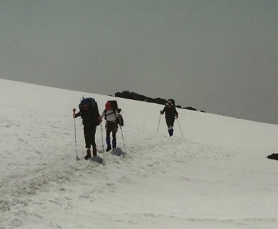
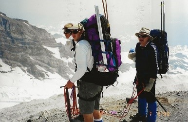
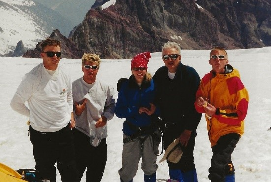

I believe the genesis for this year’s climb actually began a year ago when Joseph and I were turned back at about the 13,400 foot level on our summit attempt of Mt. Rainier. I had begun a bout with mountain sickness the afternoon before at our base camp at Camp Schurman. The nausea continued to bother me during the climb and I found it very hard to eat and drink adequately. Therefore, my general physical fitness became a real concern to me and I think a danger to both Joseph and myself on the mountain.
This year’s attempt would be by the most popular route on the mountain, the Disappointment Cleaver route. We would make an intermediate overnight stop at Camp Muir (10,188 ft.) and then move on to Ingraham Flats (11,000 ft.) where we would reestablish our campsite, rest during most of the afternoon and evening, and leave for our summit attempt early in the morning of July 10, 1999.
Joseph was the designated team leader and had spent many hours evaluating routes and clothing, assessing the strengths and weaknesses of the climbers, and rounding up all the needed technical gear that would ensure that we were properly equipped to be on the mountain. The other team members were Brooke, Ryan, and Ralph Davis, Eric Earl, a friend of Ryan’s and our good family friend, Barry Stratton. Joseph, Barry, and Ryan had made previous summits of Mt. Rainier.
Our preparation for the climb begins in the parking lot at Paradise. Everything needed for the summit effort must be carried with us in our backpacks. Proper preparation is critical for our comfort but more importantly for our safety.
The climb to Camp Muir is not really a climb but more of an endurance contest. It is approximately 4.4 miles from the parking lot at Paradise to the rock huts of Camp Muir. About half of this distance is spent on the Muir snowfield, which you swear, after several hours of hiking, is never going to end. The early going was fun as we were all fresh and excited and was punctuated with the siting of a fox. The weather was perfect for this portion of the trip. Although throughout the duration of the trip there was an unsightly haze that shrouded most of the low valleys from our view.
The halfway point of this part of the journey is a pleasant stream called Pebble Creek, which flows directly out from under the snow of the Muir snowfield. The water is clean, cold, and refreshing. This would be the last free flowing water we would be able to access during our summit attempt. All the rest of our water would come from melting snow on our small camp stoves.
This is a very difficult time. I am physically exhausted and my pack seems to weight a ton. Br. Stratton says that Camp Muir is close. He gauges it by the rock formations that are familiar to him. To my rescue comes Ryan, who had made Camp Muir dropped his pack and returned down the snowfield to help his old dad. He carried my pack the final 500 yards or so to Camp Muir. Thanks, Ryan!
The evening at Camp Muir was very pleasant. There was a lot of activity among those that were assembled here. Some were preparing for a summit attempt early the next morning and some were preparing to return to the parking lot at Paradise. Some had made the summit earlier that day and some had been disappointed in their efforts and were most likely planning their next attempt. After a less than gourmet meal of raman with chicken chunks and a couple of cups of hot chocolate we were all pretty tired and retired to our tents fairly early. The temperature took a very noticeable dip when the sunlight no longer enveloped the area where we were camping. The down sleeping bags provided a welcome relief from the cold
When quietness prevailed at the Camp Muir site and we lay in our bags, the calving off of the glacier or a distant rock fall reminded us all that there was still an element of danger to what we were about on the mountain.
Camp Muir would also be the last place on the mountain where bathroom responsibilities would be a private affair. When we purchased our climbing permits we were also issued “Blue bags”. These bags were to be used to remove human feces (your own) from the mountain. However, there was plenty of evidence to suggest that not everyone participated to the same extent in the blue bag program.
As you might expect, for those that had to venture out during the darkness of night for more bathroom duty, the beauty of the heavens was unparalleled. With only a small crescent of a moon and virtually no artificial light from the earth to dampen their brightness, the stars in the heavens seemed close enough to touch.
We slept in rather late the next morning, Friday, July 9. Fixed a standard climbing breakfast of instant oatmeal and hot chocolate (I finished off the leftover raman) and began to break down our campsite and prepared to move to Ingraham Flats which was our second day destination. In our haste to put the tents away we momentarily left Joseph’s nice North Face tent with no tent stakes or weight inside the tent for security and a quickly developing wind picked up the tent and blew it toward the glacier and some very deep crevasses. Luckily, due to the quick actions of Joseph, Ryan and especially Eric, the tent was rescued before it plunged out of site into the crevasse.
Upon completing our packing, we strapped on our crampons and organized ourselves into two rope teams of three people each. Because we will be on glaciers for the rest of the ascent, the team will travel roped together for safety.
It took only an hour to move from Camp Muir through what is known as Cathedral Gap to our new campsite at Ingraham Flats. There were several other parties of climbers already bivouacked at the Flats when we arrived and more would arrive as the day wore on. Here we set up our tents again, prepared our sleeping sites, and settled in for the nervous wait for final departure that was planned for 12:30am. We passed the time trying to sleep, melting snow for water, eating, catching some sun rays, and making sure that our technical equipment was ready to go. Joseph and Brooke made snow cones for us from glacial snow and koolaide. It was a welcome relief from the tension of the waiting. We discussed what clothing to wear for the ascent, what emergency equipment to bring, how much water each should carry, and did everyone need to bring packs. Each issue could possibly have an impact on the success or failure of our ascent.
Joseph and Barry discussed probably the most critical item of all and that was whether or not to go as one rope team of six or two rope teams of three each. After weighting the advantages and disadvantages, Joseph made the decision to travel up the mountain as one rope team.
Bathroom issues at the Flats were a significant challenge especially for Brooke. She being the lone female in camp for most of the time that we were there. The “bathroom” consisted of a plastic mesh fence approximately two feet high enclosed on three sides. It was very rustic and not at all private. She handled it the best she could and tried to keep a good sense of humor about the whole thing. It was not pleasant!
All of us were aware that there had been accidental deaths on Mt. Rainier over the years and even as recently as a couple of weeks ago. We also knew that not all those deaths were novice climbers but rather experts who had very good mountaineering skills. Our group had tried hard to be prepared with the proper equipment and knowledge. We did not want anything to happen to any person in the group, which might endanger their life. With those thoughts in our minds, we were all pretty upset by a group of three climbers who came into camp rather late in the day and proceeded to try to set up their camp. They had not been roped up when they arrived.
It was obvious from the markings on their gear that most of it had been rented from REI. They had no snow shovel for leveling their tent area. A neighbor let them borrow their shovel. Their effort to erect the tent they had rented was futile. After letting them struggle with the still flat tent for awhile, Joseph went to their rescue and showed them how to use the poles and soon the tent was up. He helped them with the rain fly and returned to our area just shaking his head in unbelief. We could not believe that these three would make a summit attempt the next morning. I will end my account of these three with a note that we did see them later the next day. They were high on the mountain, still not roped together, walking along as if it were just another hike in the mountains. Later in the day we saw them come safely down and all breathed a sigh of relief.
Another interesting incident happened that afternoon at the Flats. As we were all sitting around resting, eating, and preparing, another group of about eight climbers enters the camping area. They appeared to have military connections (or perhaps wanted to have) as most of their equipment was camouflage colored. Their language was also colored and punctuated with the ‘f’ word quite frequently. As luck would have it they also did not have a snow shovel to dig out their tent sites and as we were the nearest neighbors they came and ask if they could borrow our shovel. Now it is a generally recognized rule of the mountain that one always trades for favors. So, Ryan knowing this says to the young man asking to borrow our shovel that they could borrow it if they would stop using the ‘f’ word. He went back to his buddies and told them to watch their language and it was pretty pleasant for the rest of the afternoon. Way to go, Ryan!
It’s time to go! Everything is ready! Joseph has overslept by about 40 minutes and he is trying to wake us quickly and get us all moving. Groups around us are already moving out of camp. During the night the wind had started to blow with some intensity and continues as we climb out of our sleeping bags and go through the ritual of getting ready to climb. We dress quickly, eat hurriedly some oatmeal and hot chocolate, check each others climbing harness, secure the tents (took the small one down because we were not sure it would stand up to the wind), and take our place on the rope. Before leaving camp we all bowed our heads and Br. Stratton prayed for our journey to be safe for each member of our team. We turned on our headlamps and moved quietly into the darkness. This was what we had been waiting and preparing for – the push to the summit of Mt. Rainier.
The DC, as it is aptly named, is a massive outcropping of crumbling rock. It is very steep and because of the record snowfall on Mt. Rainier this past winter it is still mostly snow covered. This makes the climbing easier at least during the ascent. Part of the lower trail is exposed to falling rocks and fixed ropes have been put in place in an effort to hurry the climbers through this part of the trail. Many people do not make it to the top of the DC because of fatigue and for some of those who do, altitude sickness begins to take its toll and many turn around and are ‘disappointed’ in their attempt at reaching the summit.
With as many teams as there are climbing today this is one of the places where you have to have patience with the other teams. It is slow going and any equipment problems are compounded if they happen on this part of the route. As fate would have it, this is where Br. Stratton had problems with his crampons and took 15 to 20 minutes to get them safely fixed so that he could continue. One team behind us became impatient and passed us as we waited in the cold wind. In addition, Brooke, Eric, and Br. Stratton all lost the light from their headlamps as their batteries lost power prematurely.
The trail up the DC zigzags back and forth. This makes it easier to climb but also opens up the possibility that those climbers ahead of you will loosen ice balls that will come crashing down on the heads of climbers below them. This is one reason to wear helmets while making the ascent to the top. We did not have helmets but will if ever we climb again. Brooke took a direct hit on top of the head with an ice ball. It stunned her but luckily did not have enough force to knock her off the trail or cause her to loose her balance. After a few minutes she was able to resume the climb.
Our goal was to be on top of the DC before the sun came up. From high on the DC we could look back toward the Flats and witness the serpentine headlight procession of the climbers behind us as they came across the Ingraham glacier towards the DC. It is a uniquely beautiful sight. Another site pointed out to me by Ryan was to observe the tiny crescent of moon that had barely cleared the horizon. Your normal sight of vision is directed to the next step ahead of you on the trail and not to any breathtaking views that may be developing. You have to stop and make yourself enjoy the journey.
Joseph, as our rope team leader, did not even pause as we cleared the DC but rather moved us right on to the Ingraham Glacier trail that would now take us the rest of the way to the summit. Br. Stratton commented that he had never been this high on the mountain prior to the sunrise. The sunrise comes a short time later. At first it seemed from the view that the sun was having a hard time breaking through the haze that was laying low in the valleys. It appeared as a large orange orb suspended in the darkness of the haze and the now departing nighttime sky. Then it broke through and the entire Eastern skyline was a beautiful, vivid orange. We could only enjoy the view for a few moments and then move ever upward.
We all prepared for the glare of the sunlight on the snow by putting on our sunglasses and goggles. The trail was not as steep as it had been on the DC but it was long and seemed to go forever. Side step. . .side step. . .rest step. . .rest step . . .power breathe with each step. Our lungs were searching for oxygen. Everyone seemed strong at this point in the ascent. Two rope teams passed us but this time they were coming downward. They had made the summit and were heading back down the mountain to base camp.
Then, without a lot of warning, we reach the summit! We made it! It had taken us exactly 6 hours to reach the summit from our campsite on the Flats.
We are all elated but too physically challenged to do much celebrating. I embrace each of my children and we shed a tear together. It is a very special moment. Br. Stratton and I embrace and I share a high five with Eric. There are other teams milling around preparing to descend. More teams will arrive while we rest on the summit. We all decide to walk across the crater (about 300 yards) of the volcano to the climbing register. It will take about 45 minutes to make the round trip. Brooke and I change our minds after going about 50 feet because we are not feeling particularly good. Brooke lies down in the snow to rest hoping not to get any sicker. I want to get out of the wind for a time but there is no place on the top that is protected from the wind. It is pretty cold!
The others return from signing the register. Joseph says we are now officially known in the climbing register as ‘The Family’. We had been given this moniker earlier during the climb and somehow it had spread among some of the climbers on the mountain. We tried to eat but only Eric seemed to have much of an appetite. Of all things to eat, he broke out the beef jerky and a Big Hunk, which he ate while the rest of us pretty much just drank our water. We were all pretty anxious to start back down. By then we had been on the summit for about 45 minutes.
One might think that the descent would be pretty easy when compared with the ascent. Of course, physically that is pretty much the case. Gravity is now working with you but it is none the less still difficult. New muscles are used and toes are routinely slammed into the end of plastic boots that do not have any ‘give’. Hot spots quickly develop and will turn into blisters that simply must be tolerated. In addition, everything is now visible (steepness and crevasses) that earlier had been hidden by the darkness.
Joseph is feeling nausea as we prepare to leave the top so asks Ryan to lead the rope team back to camp. An hour or so later he will leave what little he was able to eat and drink along the pathway. After his vomiting session he immediately feels better and is much revived in spirit. He has been very strong both physically and mentally during this whole ordeal.
The remainder of the trek back to camp on the Flats will go without serious incident. The warmth of the sun is making the snow heavy even though the wind continues at about the same intensity. Our crampons begin to ‘ball up’ as the heavy snow sticks to them and we have to work harder to get and keep good footing. As we reach the first rock crossing on the DC we will take off our crampons and will not use them again during the duration of the trip.
Back at camp on the Flats we rest. Everyone’s water supply is gone so we melt snow for a supply of water that will last until we reach Pebble Creek. A check of a watch shows the time to be about 12:30pm so we also grab a bite to eat. We’re all anxious to get off the mountain and back home so we start taking down camp and packing backpacks for the long trip back to the Paradise parking lot.
Other groups around us are resting and preparing for their ascent later tonight. We pull on our backpacks, clip onto the rope (until we reach Camp Muir) and head off in the direction of Camp Muir. The going is now easy and except for a short distance through a rock fall area it is not dangerous. We arrive at Camp Muir after about 45 minutes of walking. We stop only long enough for bathroom duties that have been delayed because of the previous conditions higher on the mountain. There is much activity at Camp Muir with many people milling around, eating, drinking, sunning, and socializing. Some preparing for ascents, others readying to go down to Paradise as are we.
The trek from Camp Muir to the Paradise parking lot is long, hot, and boring. The edge created by anticipation on the ascent leg is missing and the task now is to simply stick it out and get off the mountain as quickly as possible. Our four younger climbing companions are long gone and will most likely be home in Auburn before we reach our car at the parking lot. We stop long enough at Pebble Creek to enjoy a nice cold drink and a few handfuls of trail mix. We are only half way from Camp Muir to the parking lot. It’s hot! There are lots of people on the mountain, many coming up and many going down. A group from RMI passes on their way to Camp Muir. They are in their traditional single file formation and number 27 people. They have the appearance of a large caterpillar with many legs. My feet are sore! It’s hot! Keep going!
At last we crest the ridge just before the parking lot and can see the car. More people playing in the snow and having fun. The parking lot is totally filled with cars. I have no energy left. By a previous arrangement with Brooke, she took the key to Barry’s car so she could load her pack and then ride home with Ryan, Eric, and Joseph. She was to hide the key over the driver’s side front wheel area. We can’t find the key! We look everywhere around the car and under the car. No key! Barry goes to the Ranger’s building to check with them but it’s closed. Need to get to a phone and call home and find out where the key was hidden. I check the front wheel area one more time, this time with my sunglasses off. There’s the key right where she was supposed to leave it. We load up, wash up, get a drink, and fill our water bottles. The drive back to Auburn via the Stevens Canyon entrance route is very beautiful and takes us about two hours. It has been a memorable three days!